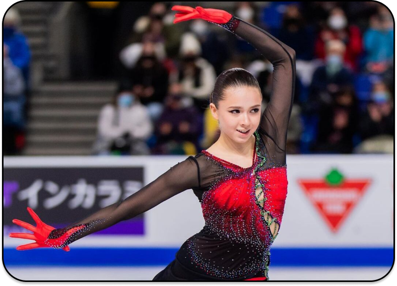
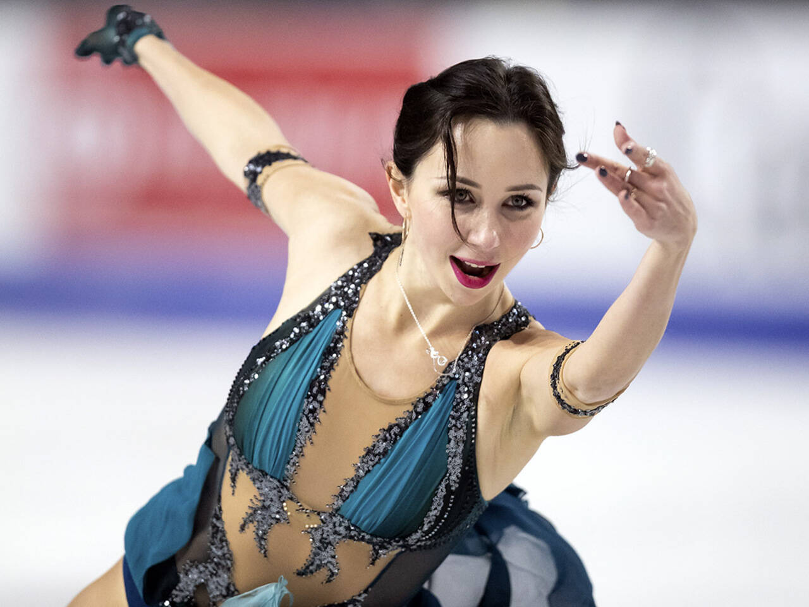
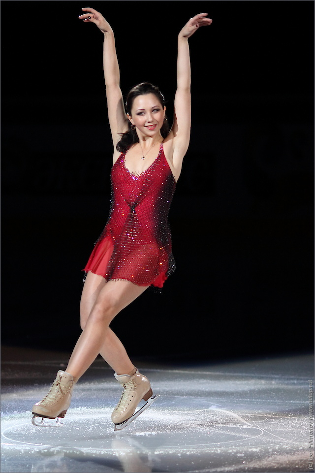
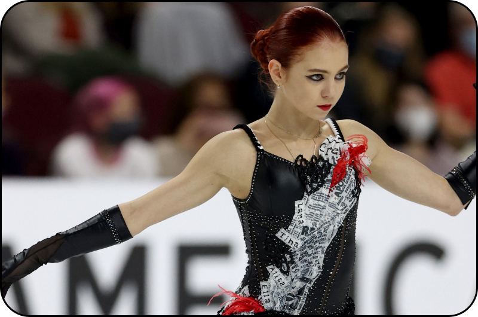

Figura
А́нна Станисла́вовна Щербако́ва (род. 28 марта 2004, Москва, Россия) — российская фигуристка, выступающая в одиночном катании. Олимпийская чемпионка 2022 года в одиночном катании, чемпионка мира (2021). Победительница командного чемпионата мира по фигурному катанию (2021). Двукратный серебряный призёр чемпионата Европы (2020, 2022). Серебряный призёр финала Гран-при (2019). Трёхкратная чемпионка России (2019, 2020, 2021).
Щербакова — первая фигуристка в истории, исполнившая четверной лутц на взрослых официальных соревнованиях и два четверных лутца в одной программе. Также она первая фигуристка среди женщин, исполнившая каскад четверной флип — тройной тулуп, как и первая в истории мирового фигурного катания фигуристка, приземлившая в одной программе два четверных флипа среди женщин. Первая и пока единственная фигуристка- одиночница из России, выигравшая Олимпиаду, будучи действующей чемпионкой мира.
Ками́ла Вале́рьевна Вали́ева ( род. 26 апреля 2006, Казань) — российская фигуристка, выступающая в одиночном катании. Олимпийская чемпионка в командном соревновании (2022), чемпионка Европы (2022). Чемпионка мира среди юниоров (2020), победительница финала юниорского Гран-при сезона 2019/2020.
Валиева — первая одиночница в истории фигурного катания, которая набрала больше 90 баллов в короткой программе, больше 185 баллов в произвольной программе и больше 272 за общую сумму баллов на соревнованиях под эгидой Международного союза конькобежцев. На юниорских соревнованиях она превзошла рекорды баллов в произвольной программе и по общей сумме — 1 раз. На соревнованиях среди взрослых она превзошла рекорды баллов в короткой программе — 2 раза, в произвольной программе и по общей сумме — 3 раза. Обладательница текущих мировых рекордов в короткой и произвольной программах и по общей сумме баллов
Елизаве́та Серге́евна Туктамы́шева; род. 17 декабря 1996, Глазов, Россия — российская фигуристка, выступающая в одиночном катании. Чемпионка мира 2015 года, серебряный призёр чемпионата мира 2021 года. Чемпионка Европы 2015 года, бронзовый призёр чемпионата Европы 2013 года. Чемпионка командного чемпионата мира 2021 года, серебряный призёр командного мирового чемпионата 2015 года и бронзовый призёр 2019 года. Победительница финала Гран-при сезона 2014/2015 годов и бронзовый призёр 2018/2019 годов. Чемпионка России (2013), двукратный серебряный (2009, 2015) и трёхкратный бронзовый (2010, 2011, 2023) призёр чемпионата России. Чемпионка I зимних юношеских Олимпийских игр (2012). Серебряный призёр чемпионата мира среди юниоров 2011 года. Серебряный призёр финала Гран-при 2010 года среди юниоров.
 По состоянию на 6 декабря 2022 года занимает 19-е место в рейтинге Международного союза конькобежцев. Туктамышеву называли «вундеркиндом» в фигурном катании, так как уже в 12 лет она исполняла чрезвычайно сложные элементы: аксель в три с половиной оборота и каскад «тройной лутц — тройной тулуп», владела всем арсеналом тройных прыжков, тренировала четверной тулуп. Наряду с Константином Меньшовым и Сергеем Вороновым, является рекордсменкой по числу участий в чемпионатах России (2008—2018, 2020—2023, 15 раз).
Алекса́ндра Вячесла́вовна Тру́сова (род. 23 июня 2004, Рязань, Россия) — российская фигуристка, выступающая в одиночном катании. Бронзовый призёр чемпионата мира (2021). Двукратный бронзовый призёр чемпионата Европы (2020, 2022). Бронзовый призёр финала Гран-при (2019). Чемпионка России (2022).
Трусова — первая фигуристка в истории, исполнившая на соревнованиях под эгидой Международного союза конькобежцев четверные лутц, тулуп и флип, и вторая (после Мики Андо), исполнившая четверной сальхов. Также она первая исполнила два четверных в одной программе: четверной тулуп и каскад четверной тулуп — тройной тулуп, и также первая в истории исполнила три четверных в одной программе: четверной лутц, каскад четверной тулуп — тройной тулуп, четверной тулуп. Первая исполнительница чистого каскада четверной тулуп — ойлер — тройной сальхов. Первая в истории исполнила пять четверных прыжков на Олимпиаде в Пекине 2022.
Начинается с движения вперёд, в силу чего в нём «не целое» число оборотов. Считается самым сложным прыжком в фигурном катании. Одиночный аксель — это полтора оборота, тройной — три с половиной.
Начинается с хода назад. Выполнение данного прыжка оставляет на льду петлю. Двигаясь на внешнем ребре правой ноги, фигурист перекрещивает левую ногу спереди и, оставляя до отрыва на льду только опорную ногу, начинает вращение (замах) всем телом по направлению прыжка